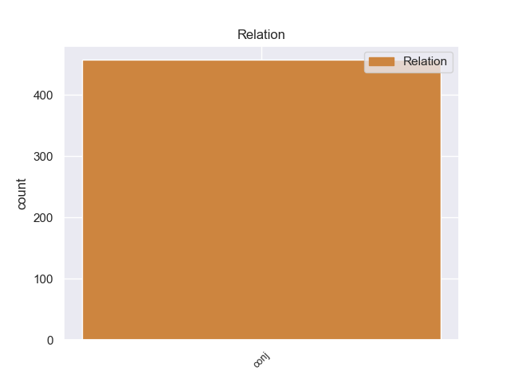
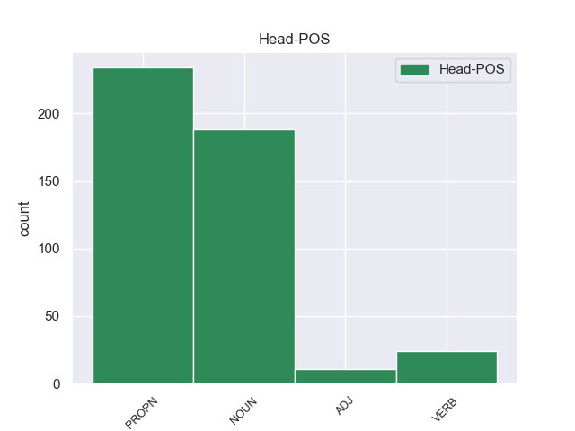
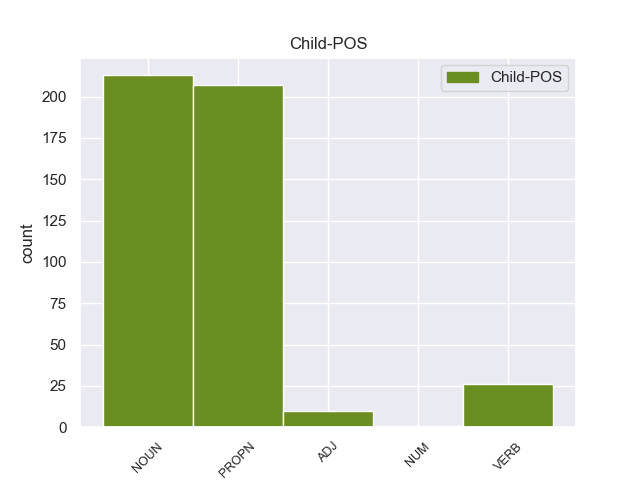

Distribution of features within this leaf



Agreement Rules sorted by frequency.
- When the dependent token is the conjunct(conj) of the head token, and the head token is PROPN
1 पत्रिका _ _ _ _ 0 _ _ _
2 के _ _ _ _ 0 _ _ _
3 अनुसार _ _ _ _ 0 _ _ _
4 खान _ _ _ _ 0 _ _ _
5 की _ _ _ _ 0 _ _ _
6 इन _ _ _ _ 0 _ _ _
7 यात्राओं _ _ _ _ 0 _ _ _
8 का _ _ _ _ 0 _ _ _
9 उद्देश्य _ _ _ _ 0 _ _ _
10 अभी _ _ _ _ 0 _ _ _
11 तक _ _ _ _ 0 _ _ _
12 स्पष्ट _ _ _ _ 0 _ _ _
13 नहीं _ _ _ _ 0 _ _ _
14 है _ _ _ _ 0 _ _ _
15 , _ _ _ _ 0 _ _ _
16 लेकिन _ _ _ _ 0 _ _ _
17 खुफिया _ _ _ _ 0 _ _ _
18 अधिकारियों _ _ _ _ 0 _ _ _
19 का _ _ _ _ 0 _ _ _
20 मानना _ _ _ _ 0 _ _ _
21 है _ _ _ _ 0 _ _ _
22 कि _ _ _ _ 0 _ _ _
23 सऊदी _ _ _ _ 0 _ _ _
24 अरब अरब PROPN NNP Case=Nom|Gender=Masc|Number=Sing|Person=3 0 _ _ _
25 और _ _ _ _ 0 _ _ _
26 मिस्र मिस्र PROPN NNP Case=Nom|Gender=Masc|Number=Sing|Person=3 24 conj _ ChunkId=NP8|ChunkType=head|Tam=0|Translit=misra|Vib=0
27 परमाणु _ _ _ _ 0 _ _ _
28 तक़नीक _ _ _ _ 0 _ _ _
29 की _ _ _ _ 0 _ _ _
30 तलाश _ _ _ _ 0 _ _ _
31 में _ _ _ _ 0 _ _ _
32 हैं _ _ _ _ 0 _ _ _
33 और _ _ _ _ 0 _ _ _
34 कई _ _ _ _ 0 _ _ _
35 अफ्रीकी _ _ _ _ 0 _ _ _
36 देश _ _ _ _ 0 _ _ _
37 कच्चे _ _ _ _ 0 _ _ _
38 यूरेनियम _ _ _ _ 0 _ _ _
39 संपन्न _ _ _ _ 0 _ _ _
40 हैं _ _ _ _ 0 _ _ _
41 । _ _ _ _ 0 _ _ _
1 मित्तल _ _ _ _ 0 _ _ _
2 स्टील _ _ _ _ 0 _ _ _
3 को _ _ _ _ 0 _ _ _
4 अल्जीरिया _ _ _ _ 0 _ _ _
5 तथा _ _ _ _ 0 _ _ _
6 दक्षिण _ _ _ _ 0 _ _ _
7 अफ्रीका _ _ _ _ 0 _ _ _
8 में _ _ _ _ 0 _ _ _
9 अपनी _ _ _ _ 0 _ _ _
10 मिलों _ _ _ _ 0 _ _ _
11 के _ _ _ _ 0 _ _ _
12 लिए _ _ _ _ 0 _ _ _
13 कच्चे _ _ _ _ 0 _ _ _
14 माल _ _ _ _ 0 _ _ _
15 की _ _ _ _ 0 _ _ _
16 जरूरत जरूरत NOUN NN Case=Nom|Gender=Fem|Number=Sing|Person=3 0 _ _ _
17 है _ _ _ _ 0 _ _ _
18 , _ _ _ _ 0 _ _ _
19 जबकि _ _ _ _ 0 _ _ _
20 जीआईएचएल _ _ _ _ 0 _ _ _
21 को _ _ _ _ 0 _ _ _
22 अजाओकूता _ _ _ _ 0 _ _ _
23 स्टील _ _ _ _ 0 _ _ _
24 मिल _ _ _ _ 0 _ _ _
25 तथा _ _ _ _ 0 _ _ _
26 नाइजीरिया _ _ _ _ 0 _ _ _
27 स्थित _ _ _ _ 0 _ _ _
28 डेल्टा _ _ _ _ 0 _ _ _
29 स्टील _ _ _ _ 0 _ _ _
30 कंपनी _ _ _ _ 0 _ _ _
31 के _ _ _ _ 0 _ _ _
32 लिए _ _ _ _ 0 _ _ _
33 और _ _ _ _ 0 _ _ _
34 ज्यादा _ _ _ _ 0 _ _ _
35 संसाधन _ _ _ _ 0 _ _ _
36 जुटाने _ _ _ _ 0 _ _ _
37 की _ _ _ _ 0 _ _ _
38 दरकार दरकार NOUN NN Case=Nom|Gender=Fem|Number=Sing|Person=3 16 conj _ ChunkId=NP13|ChunkType=head|Tam=0|Translit=darakāra|Vib=0
39 है _ _ _ _ 0 _ _ _
40 । _ _ _ _ 0 _ _ _
1 ऐसा _ _ _ _ 0 _ _ _
2 होने _ _ _ _ 0 _ _ _
3 की _ _ _ _ 0 _ _ _
4 स्थिति _ _ _ _ 0 _ _ _
5 में _ _ _ _ 0 _ _ _
6 शिक्षकों _ _ _ _ 0 _ _ _
7 के _ _ _ _ 0 _ _ _
8 लिए _ _ _ _ 0 _ _ _
9 पाठ्य _ _ _ _ 0 _ _ _
10 - _ _ _ _ 0 _ _ _
11 पुस्तकों _ _ _ _ 0 _ _ _
12 के _ _ _ _ 0 _ _ _
13 कुछ _ _ _ _ 0 _ _ _
14 अंश _ _ _ _ 0 _ _ _
15 न _ _ _ _ 0 _ _ _
16 पढ़ाने पढ़ा VERB VM Case=Acc|VerbForm=Inf 0 _ _ _
17 और _ _ _ _ 0 _ _ _
18 कुछ _ _ _ _ 0 _ _ _
19 अलग _ _ _ _ 0 _ _ _
20 से _ _ _ _ 0 _ _ _
21 पढ़ाने पढ़ा VERB VM Case=Acc|Number=Plur|VerbForm=Inf 16 conj _ ChunkId=VGNN3|ChunkType=head|Tam=nA|Translit=paṛhāne|Vib=ना_जैसा
22 जैसे _ _ _ _ 0 _ _ _
23 दिशा _ _ _ _ 0 _ _ _
24 - _ _ _ _ 0 _ _ _
25 निर्देश _ _ _ _ 0 _ _ _
26 भी _ _ _ _ 0 _ _ _
27 जारी _ _ _ _ 0 _ _ _
28 किए _ _ _ _ 0 _ _ _
29 जा _ _ _ _ 0 _ _ _
30 सकते _ _ _ _ 0 _ _ _
31 हैं _ _ _ _ 0 _ _ _
32 । _ _ _ _ 0 _ _ _
1 विश्वसनीय विश्वसनीय ADJ JJ Case=Nom 0 _ _ _
2 व _ _ _ _ 0 _ _ _
3 लाभ _ _ _ _ 0 _ _ _
4 रहित रहित ADJ JJ Case=Nom 1 conj _ ChunkId=JJP2|ChunkType=head|Translit=rahita
5 जानकारी _ _ _ _ 0 _ _ _
6 बांटने _ _ _ _ 0 _ _ _
7 वाली _ _ _ _ 0 _ _ _
8 वेबसाइटों _ _ _ _ 0 _ _ _
9 का _ _ _ _ 0 _ _ _
10 मुख्य _ _ _ _ 0 _ _ _
11 अड्डा _ _ _ _ 0 _ _ _
12 अब _ _ _ _ 0 _ _ _
13 हमारा _ _ _ _ 0 _ _ _
14 मुल्क _ _ _ _ 0 _ _ _
15 बनने _ _ _ _ 0 _ _ _
16 वाला _ _ _ _ 0 _ _ _
17 है _ _ _ _ 0 _ _ _
18 । _ _ _ _ 0 _ _ _
Disagree Examples:
1 लक्ष्मीनारायण _ _ _ _ 0 _ _ _
2 मंदिर मंदिर PROPN NNP Case=Acc|Gender=Masc|Number=Sing|Person=3 0 _ _ _
3 और _ _ _ _ 0 _ _ _
4 राजमहल _ _ _ _ 0 _ _ _
5 की _ _ _ _ 0 _ _ _
6 दीवारें दीवार NOUN NN Case=Nom|Gender=Fem|Number=Plur|Person=3 2 conj _ ChunkId=NP3|ChunkType=head|Tam=0|Translit=dīvāreṁ|Vib=0
7 और _ _ _ _ 0 _ _ _
8 छतों _ _ _ _ 0 _ _ _
9 की _ _ _ _ 0 _ _ _
10 कलात्मकता _ _ _ _ 0 _ _ _
11 यहाँ _ _ _ _ 0 _ _ _
12 की _ _ _ _ 0 _ _ _
13 समृद्धि _ _ _ _ 0 _ _ _
14 की _ _ _ _ 0 _ _ _
15 कहानी _ _ _ _ 0 _ _ _
16 कहतीं _ _ _ _ 0 _ _ _
17 हैं _ _ _ _ 0 _ _ _
18 । _ _ _ _ 0 _ _ _
1 समाजवादी _ _ _ _ 0 _ _ _
2 पार्टी _ _ _ _ 0 _ _ _
3 के _ _ _ _ 0 _ _ _
4 अध्यक्ष अध्यक्ष NOUN NN Case=Nom|Gender=Masc|Number=Sing|Person=3 0 _ _ _
5 और _ _ _ _ 0 _ _ _
6 उत्तर _ _ _ _ 0 _ _ _
7 प्रदेश _ _ _ _ 0 _ _ _
8 के _ _ _ _ 0 _ _ _
9 मुख्यमंत्री _ _ _ _ 0 _ _ _
10 मुलायम _ _ _ _ 0 _ _ _
11 सिंह _ _ _ _ 0 _ _ _
12 यादव यादव PROPN NNP Case=Acc|Number=Sing|Person=3 4 conj _ ChunkId=NP5|ChunkType=head|Tam=0|Translit=yādava|Vib=0_ने
13 ने _ _ _ _ 0 _ _ _
14 शुक्रवार _ _ _ _ 0 _ _ _
15 को _ _ _ _ 0 _ _ _
16 एक _ _ _ _ 0 _ _ _
17 बार _ _ _ _ 0 _ _ _
18 फिर _ _ _ _ 0 _ _ _
19 तीसरा _ _ _ _ 0 _ _ _
20 मोर्चा _ _ _ _ 0 _ _ _
21 बनाने _ _ _ _ 0 _ _ _
22 की _ _ _ _ 0 _ _ _
23 अपील _ _ _ _ 0 _ _ _
24 की _ _ _ _ 0 _ _ _
25 । _ _ _ _ 0 _ _ _
1 दिल्ली _ _ _ _ 0 _ _ _
2 चूंकि _ _ _ _ 0 _ _ _
3 मीडिया _ _ _ _ 0 _ _ _
4 का _ _ _ _ 0 _ _ _
5 मक्का _ _ _ _ 0 _ _ _
6 - _ _ _ _ 0 _ _ _
7 मदीना _ _ _ _ 0 _ _ _
8 है _ _ _ _ 0 _ _ _
9 इसलिए _ _ _ _ 0 _ _ _
10 यहां _ _ _ _ 0 _ _ _
11 चोरी _ _ _ _ 0 _ _ _
12 उछालने _ _ _ _ 0 _ _ _
13 पर _ _ _ _ 0 _ _ _
14 इस _ _ _ _ 0 _ _ _
15 बात _ _ _ _ 0 _ _ _
16 की _ _ _ _ 0 _ _ _
17 गारंटी _ _ _ _ 0 _ _ _
18 तो _ _ _ _ 0 _ _ _
19 रहती _ _ _ _ 0 _ _ _
20 ही _ _ _ _ 0 _ _ _
21 है _ _ _ _ 0 _ _ _
22 कि _ _ _ _ 0 _ _ _
23 माल _ _ _ _ 0 _ _ _
24 भले _ _ _ _ 0 _ _ _
25 न _ _ _ _ 0 _ _ _
26 बिके _ _ _ _ 0 _ _ _
27 लेकिन _ _ _ _ 0 _ _ _
28 पब्लिसिटी पब्लिसिटी NOUN NN Case=Nom|Gender=Fem|Number=Sing|Person=3 0 _ _ _
29 और _ _ _ _ 0 _ _ _
30 देर _ _ _ _ 0 _ _ _
31 रात रात NOUN NN Case=Acc|Gender=Fem|Number=Sing|Person=3 28 conj _ ChunkId=NP11|ChunkType=head|Tam=0|Translit=rāta|Vib=0_का
32 की _ _ _ _ 0 _ _ _
33 पार्टियों _ _ _ _ 0 _ _ _
34 में _ _ _ _ 0 _ _ _
35 चर्चा _ _ _ _ 0 _ _ _
36 तो _ _ _ _ 0 _ _ _
37 होगी _ _ _ _ 0 _ _ _
38 । _ _ _ _ 0 _ _ _
1 दूसरे _ _ _ _ 0 _ _ _
2 सियाचिन सियाचिन PROPN NNP Case=Nom|Gender=Masc|Number=Sing|Person=3 0 _ _ _
3 या _ _ _ _ 0 _ _ _
4 कश्मीर _ _ _ _ 0 _ _ _
5 मुद्दे मुद्दा NOUN NN Case=Acc|Gender=Masc|Number=Sing|Person=3 2 conj _ ChunkId=NP2|ChunkType=head|Tam=0|Translit=mudde|Vib=0_का
6 का _ _ _ _ 0 _ _ _
7 कोई _ _ _ _ 0 _ _ _
8 भी _ _ _ _ 0 _ _ _
9 समाधान _ _ _ _ 0 _ _ _
10 तभी _ _ _ _ 0 _ _ _
11 संभव _ _ _ _ 0 _ _ _
12 है _ _ _ _ 0 _ _ _
13 जब _ _ _ _ 0 _ _ _
14 सीमा _ _ _ _ 0 _ _ _
15 पार _ _ _ _ 0 _ _ _
16 का _ _ _ _ 0 _ _ _
17 आतंकवाद _ _ _ _ 0 _ _ _
18 पूरी _ _ _ _ 0 _ _ _
19 तरह _ _ _ _ 0 _ _ _
20 से _ _ _ _ 0 _ _ _
21 बंद _ _ _ _ 0 _ _ _
22 हो _ _ _ _ 0 _ _ _
23 जाएगा _ _ _ _ 0 _ _ _
24 । _ _ _ _ 0 _ _ _
1 अभी _ _ _ _ 0 _ _ _
2 कुछ _ _ _ _ 0 _ _ _
3 दिन _ _ _ _ 0 _ _ _
4 पहले _ _ _ _ 0 _ _ _
5 ही _ _ _ _ 0 _ _ _
6 बीएसएफ _ _ _ _ 0 _ _ _
7 के _ _ _ _ 0 _ _ _
8 जवान जवान NOUN NN Case=Nom|Gender=Masc|Number=Plur|Person=3 0 _ _ _
9 और _ _ _ _ 0 _ _ _
10 उनके _ _ _ _ 0 _ _ _
11 परिजनों परिजन NOUN NN Case=Acc|Gender=Masc|Number=Plur|Person=3 8 conj _ ChunkId=NP6|ChunkType=head|Tam=0|Translit=parijanoṁ|Vib=0_समेत
12 समेत _ _ _ _ 0 _ _ _
13 ३० _ _ _ _ 0 _ _ _
14 लोग _ _ _ _ 0 _ _ _
15 मारे _ _ _ _ 0 _ _ _
16 गए _ _ _ _ 0 _ _ _
17 . _ _ _ _ 0 _ _ _